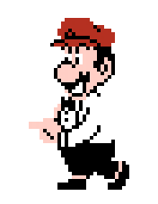
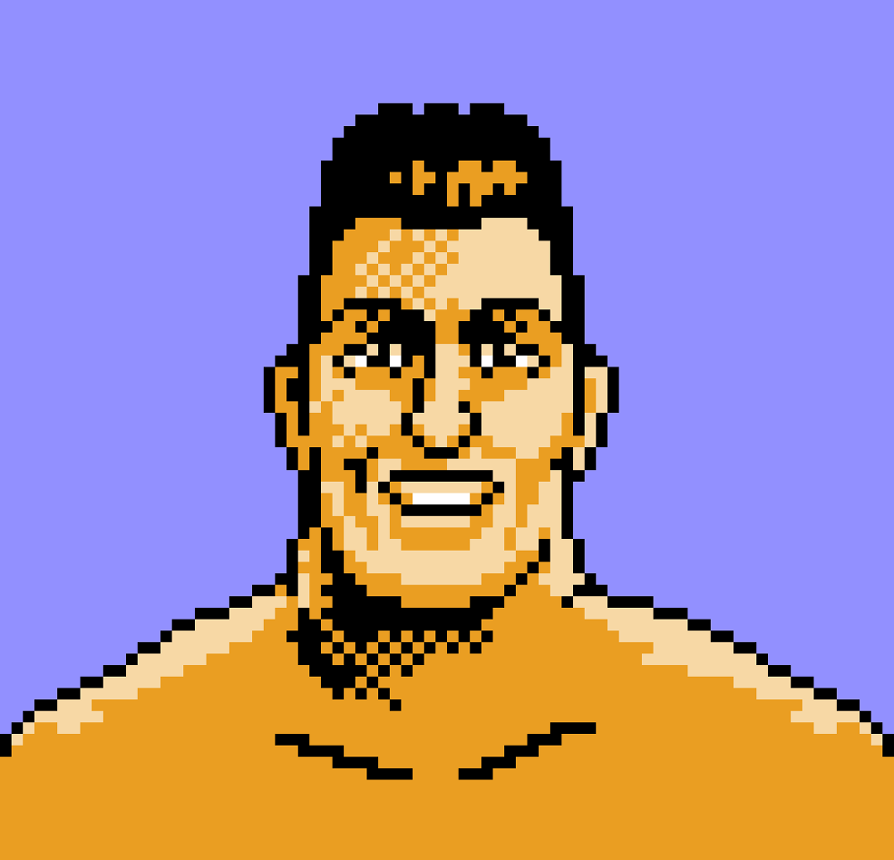

Mario is the Referee

Mario is the on-screen referee in the game; wearing a white shirt, suspenders, and a bow tie. Mario oversees every match, waves his arms to start or stop the action, and counts down fighters who hit the canvas.
This is one of Mario's earliest and most famous cameos outside of his own platformer games.
Game designer Makoto Wada added Nintendo's golden child into the game as a joke. Wada did not get approval from the higher–ups at Nintendo and thought Mario would be removed during the development process. Surprisingly, Mario made it to the final version.
Health Secrets
Get Back Up with Extra Health
When knocked down, you can press A and B repeatedly to try and get back up. Normally when you do this, you'll only have some of your health. However, if you do this so that you get up when the referee's count is at a certain number, you'll instead get back up with more health!
In the Minor Circuit, get up on an even number. You get extra (but not all) your health.
In the Major Circuit, get up on 7, 8, or 9. You get extra health, or full health if you fight King Hippo.
In the World Circuit, get up on 9. You get extra health, or full health on Mr. Sandman and Mr. Macho Man. (If you get up on 8 though, you actually get less health)
When fighting Mike Tyson, get up on 9. You will usually get full health, except for your third time doing this (you still get more than normal though).
Start a Match with Half Health
If you press Select before the round ever starts in ANY of the fights, you'll lose half your health.
License Expiration
Nintendo originally signed Tyson to a three–year likeness deal in 1986 for $50,000 before he became the undisputed heavyweight champion. Mike Tyson was removed from Punch-Out!! because his three–year licensing contract with Nintendo expired in 1990 and was not renewed.
Replacement with Mr. Dream

Nintendo replaced Tyson's sprite and name with a fictional final boss named Mr. Dream. The actual mechanics, speed, and patterns of the final boss fight remained completely unchanged. Many fans assume Tyson was removed due to his later legal troubles and convictions, but Nintendo's licensing contract had already lapsed and the Mr. Dream version was released before those scandals occurred.